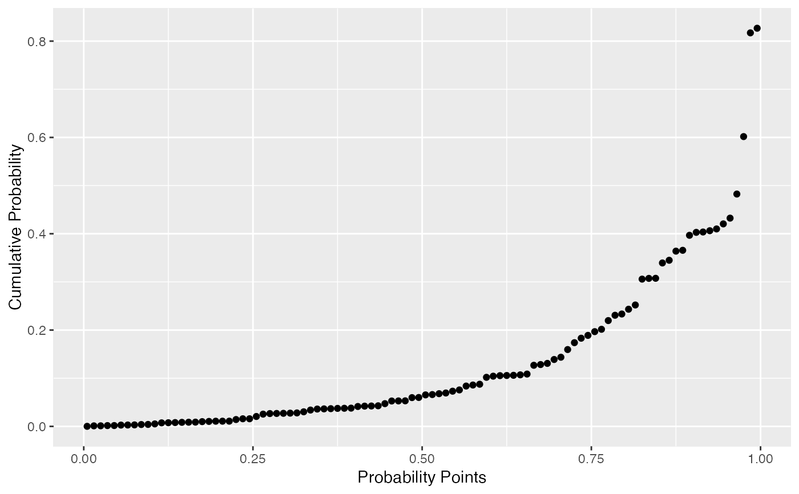
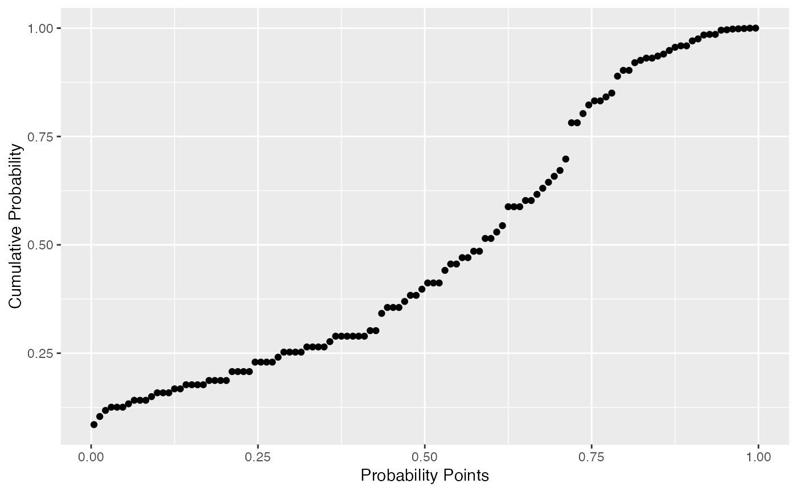

Draws probability-probability points.
stat_pp_point(data = NULL, mapping = NULL, geom = "point",
position = "identity", na.rm = TRUE, show.legend = NA,
inherit.aes = TRUE, distribution = "norm", dparams = list(),
detrend = FALSE, ...)
Arguments
| data |
The data to be displayed in this layer. There are three
options:
If NULL, the default, the data is inherited from the plot
data as specified in the call to ggplot.
A data.frame, or other object, will override the plot
data. All objects will be fortified to produce a data frame. See
fortify for which variables will be created.
A function will be called with a single argument,
the plot data. The return value must be a data.frame., and
will be used as the layer data. |
| mapping |
Set of aesthetic mappings created by aes or
aes_. If specified and inherit.aes = TRUE (the
default), it is combined with the default mapping at the top level of the
plot. You must supply mapping if there is no plot mapping. |
| geom |
The geometric object to use display the data |
| position |
Position adjustment, either as a string, or the result of
a call to a position adjustment function. |
| na.rm |
If FALSE, the default, missing values are removed with
a warning. If TRUE, missing values are silently removed. |
| show.legend |
logical. Should this layer be included in the legends?
NA, the default, includes if any aesthetics are mapped.
FALSE never includes, and TRUE always includes. |
| inherit.aes |
If FALSE, overrides the default aesthetics,
rather than combining with them. This is most useful for helper functions
that define both data and aesthetics and shouldn't inherit behaviour from
the default plot specification, e.g. borders. |
| distribution |
Character. Theoretical probability distribution function
to use. Do not provide the full distribution function name (e.g.,
"dnorm"). Instead, just provide its shortened name (e.g.,
"norm"). If you wish to provide a custom distribution, you may do so
by first creating the density, quantile, and random functions following the
standard nomenclature from the stats package (i.e., for
"custom", create the dcustom, pcustom,
qcustom, and rcustom functions). |
| dparams |
List of additional parameters passed on to the previously
chosen distribution function. If an empty list is provided (default)
then the distributional parameters are estimated via MLE. MLE for custom
distributions is currently not supported, so you must provide the
appropriate dparams in that case. |
| detrend |
Logical. Should the plot objects be detrended? If TRUE,
the objects will be detrended according to the default identity P-P line.
This procedure was described by Thode (2002), and may help reducing visual
bias caused by the orthogonal distances from P-P points to the reference
line. |
| ... |
other arguments passed on to layer. These are
often aesthetics, used to set an aesthetic to a fixed value, like
color = "red" or size = 3. They may also be parameters
to the paired geom/stat. |
References
Examples
# generate random Normal data
set.seed(0)
smp <- data.frame(norm = rnorm(100))
# Normal P-P plot of Normal data
gg <- ggplot(data = smp, mapping = aes(sample = norm)) +
stat_pp_point() +
labs(x = "Probability Points", y = "Cumulative Probability")
gg
# Shifted Normal P-P plot of Normal data
dp <- list(mean = 1.5)
gg <- ggplot(data = smp, mapping = aes(sample = norm)) +
stat_pp_point(dparams = dp) +
labs(x = "Probability Points", y = "Cumulative Probability")
gg

# Normal P-P plot of mean ozone levels (airquality dataset)
dp <- list(mean = 38, sd = 27)
gg <- ggplot(data = airquality, mapping = aes(sample = Ozone)) +
stat_pp_point(dparams = dp) +
labs(x = "Probability Points", y = "Cumulative Probability")
gg
